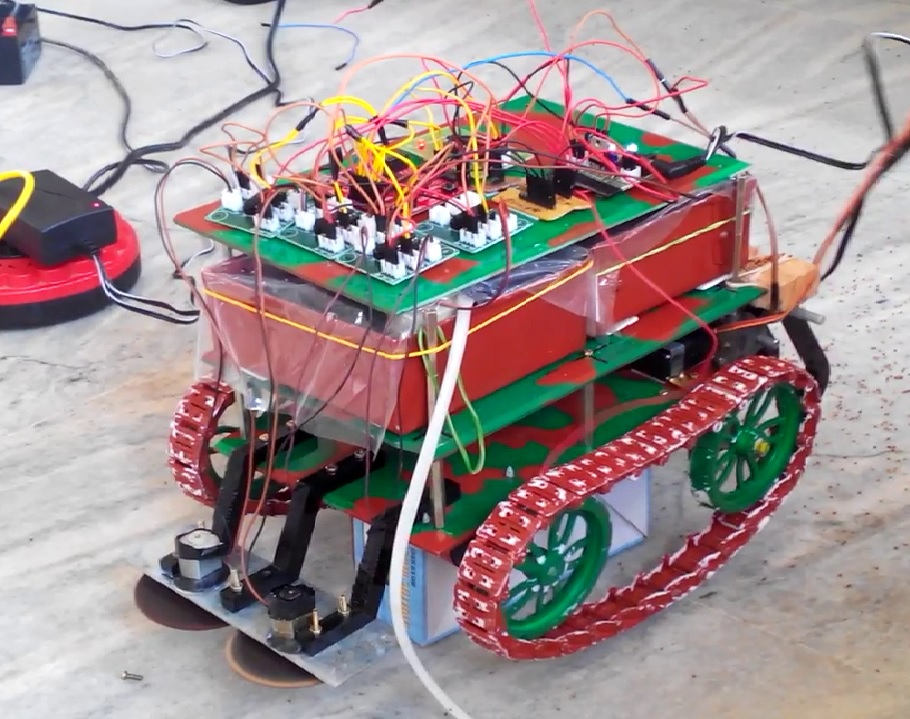
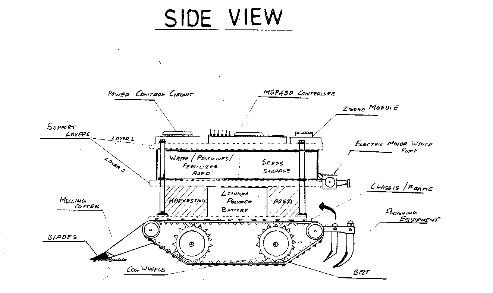
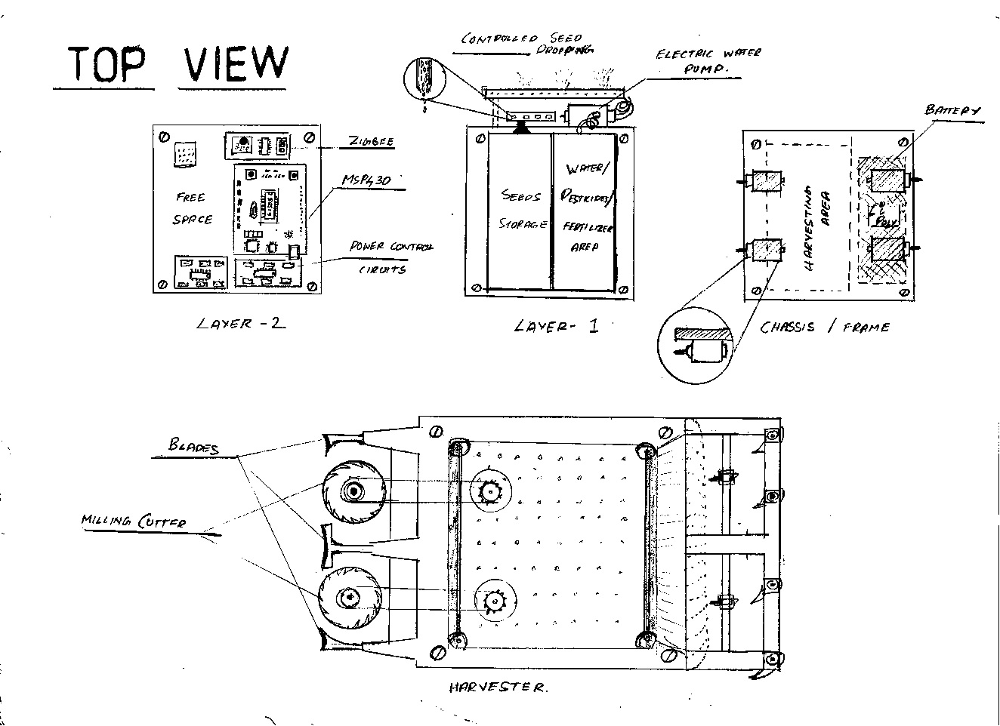
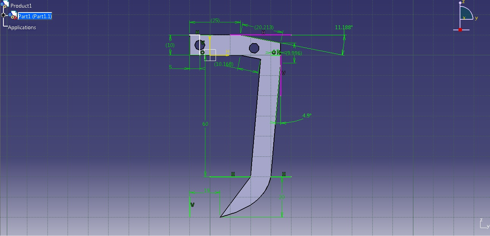
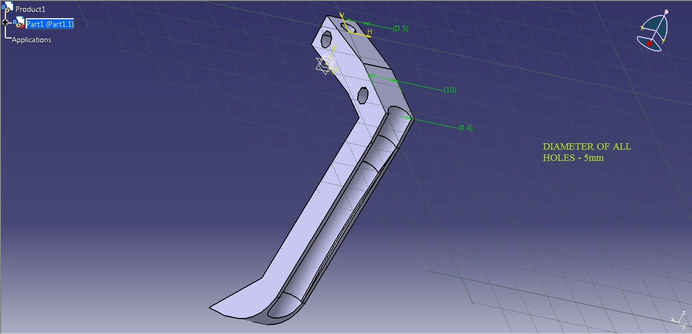
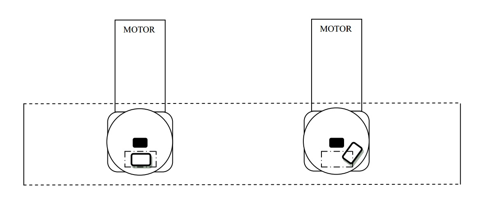
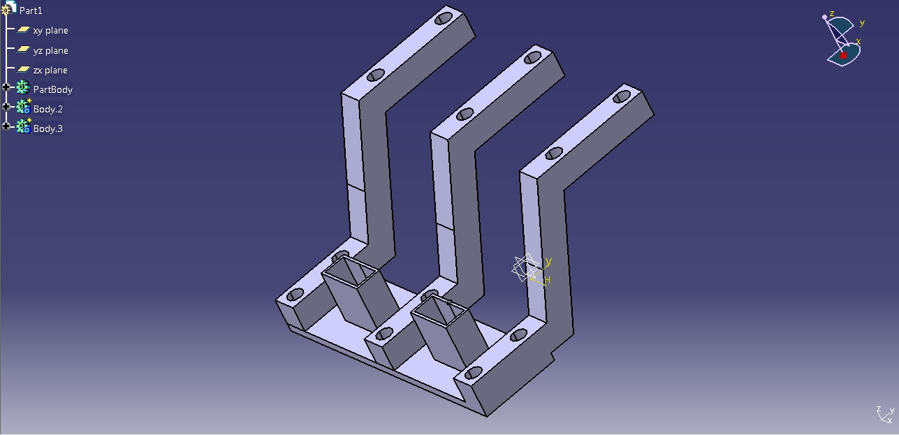
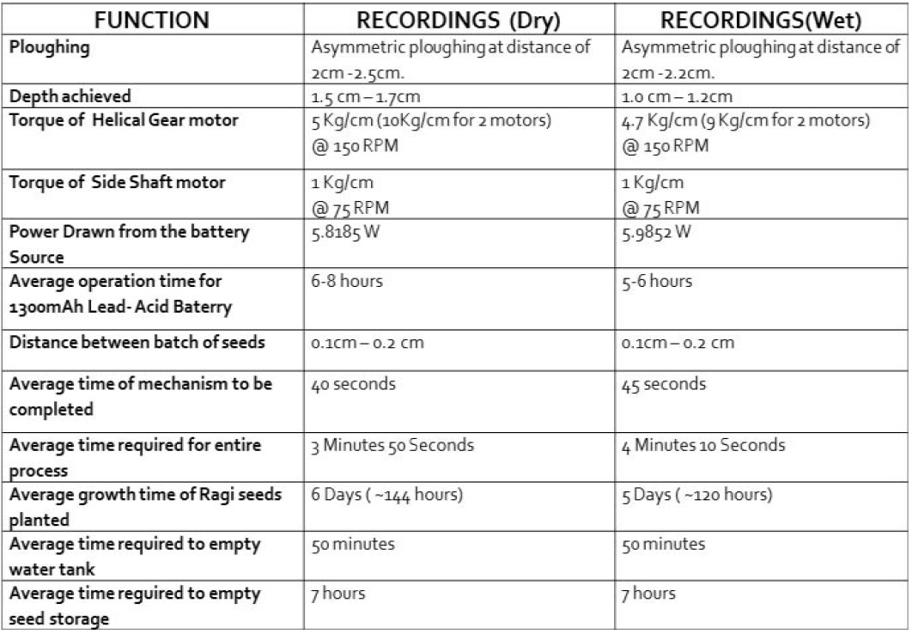

Revolutionizing Farming with Swarm Robotics
Date: Spring 2016 | Category: Senior Design Project | Affiliation: IEEE: 6th International Conference on Intelligent Systems, Modelling and Simulation
Incorporate Swarm Intelligence and Swarm Robotics to increase yield and productivity, decrease time and labour in agriculture.
Dependencies:


Overview
Swarm robotics is a diligence of swarm intelligence. It deals with natural and artificial systems in an environment composed of many individuals that co-ordinate using decentralized control to perform a certain task or work towards a common goal in the presence of a co-ordinator. This highly adaptable and self-organized system of robots is a new approach to co-ordination of multi robot systems.
Incorporating this system of robots revolutionizing the process of farming is one of the major breakthroughs in this generation of robotics. This synopsis mainly deals with application of this completely autonomous system in mapping, ploughing, seeding, irrigating, harvesting etc., also constantly monitoring the crops during its growth period and keeping the farmer informed about the crops year-round. This system is implemented by reducing the constraints of cost and power consumption, hence diluting the amount of hardware required for its implementation without compromising the quality of service. It also proposes a simple operation mechanism for high efficiency of the system and simple communication protocol to ensure fast intermediate data exchange. Lastly, it throws light on the future challenge and its application of the same structure of robot systems in various fields.

Figure 1. Final Stucture


Figure 2 and 3. Blueprint
Dynamic Model of the Robot
The robots which are used to achieve this functionality consists of The Texas Instruments MSP430 family of ultralow-power microcontrollers mounted on the top. It forms the heart of the robot system, consists of several other devices featuring different sets of peripherals targeted for various applications. The architecture, combined with five low power modes, is optimized to achieve extended battery life in portable measurement applications. The device features a powerful 16-bit RISC CPU, 16-bit registers, and constant generators that contribute to maximum code efficiency. Hence this solves the major problem faced in adaptability as new algorithms can be implemented easily with multi-thread processing. The digitally controlled oscillator (DCO) allows wake-up from low-power modes to active mode in less than 1 μs, thus having very high response time. MSP430G2253 series are very low cost ultra-low-power (1.8 V to 3.6 V) mixed signal microcontrollers with built-in 16-bit timers, up to 24 I/O capacitive-touch enabled pins, a versatile analog comparator, and built-in communication capability using the universal serial communication interface. In addition, the MSP430G2x53 family members have a 10-bit analog-to-digital (A/D) converter.
Ploughing and Seed Channel Tool Design

Figure 4. Plouging Tool side view

Figure 5. Seeding Channel Provision
Seeding Mechanism Inside the Seed Container

Figure 6. Seeding Tool
Harvesting Mount and Tool Design

Figure 7. Harvesting Tool
Selected Results

Table 1. Dry and Wet Soil Robot Agriculture Results